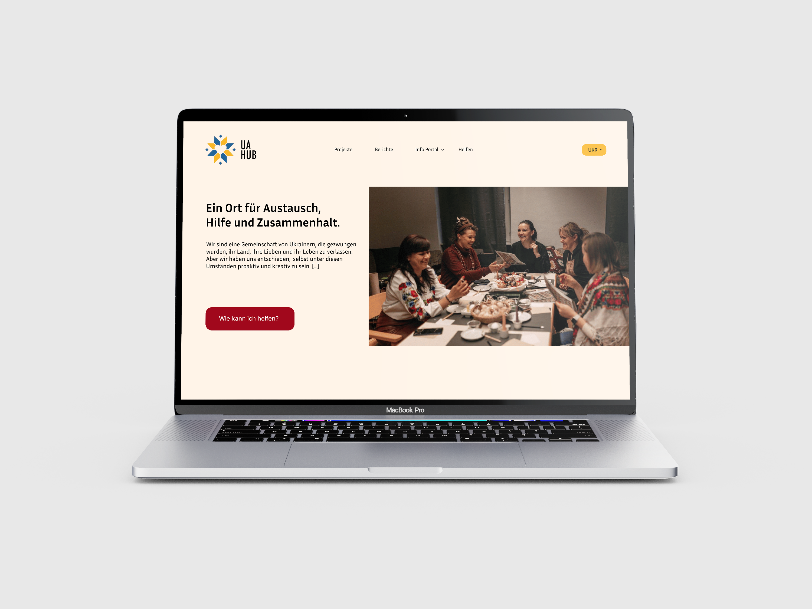

UA Hub Website Redesign
As an extension of the UA Hub visual identity project, I redesigned the organization's website in Figma to align with the newly developed brand style and logo.
The redesign moved away from the previous visual approach in favor of a cleaner, more professional and minimalist aesthetic — one that feels modern and timeless. Special attention was given to improving site navigation and overall user orientation, making it easier for visitors to find information and understand the organization's mission at a glance.
